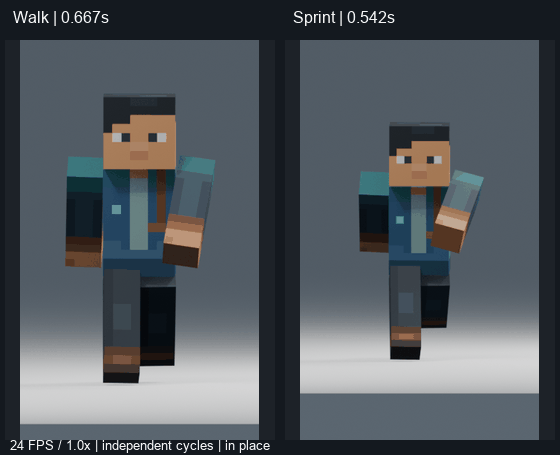
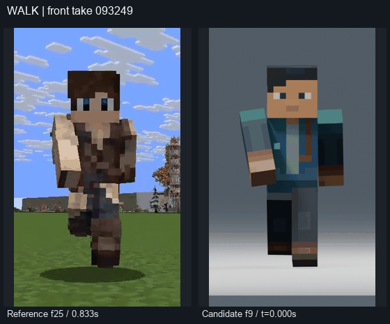
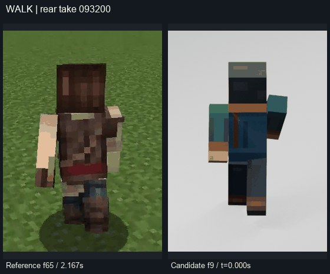
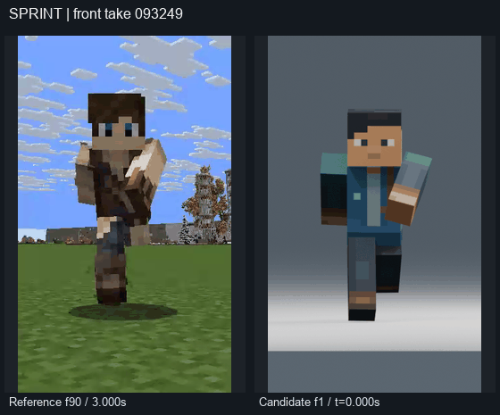
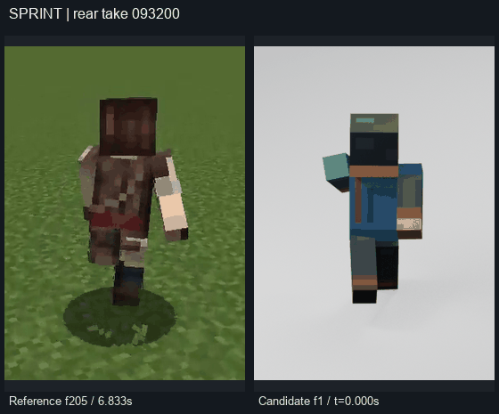

Original motion on the existing rigid cuboid rig. Normal speed: 24 FPS, 1.0×. Source review used decoded frames, not observed continuous playback. The front and rear recordings are separate takes.
Walk and Sprint

Independent 0.667 s Walk and 0.542 s Sprint clocks. Endpoint keys retained; duplicate endpoints are excluded from playback.
Walk — reference / candidate

Front take, independently anchored. Camera framing is approximate; no 3D measurement is implied. Timestamped pose sheet · MP4

Rear take, independently anchored. Camera framing is approximate; no 3D measurement is implied. Timestamped pose sheet · MP4
Sprint — reference / candidate

Front take, independently anchored. Camera framing is approximate; no 3D measurement is implied. Timestamped pose sheet · MP4

Rear take, independently anchored. Camera framing is approximate; no 3D measurement is implied. Timestamped pose sheet · MP4